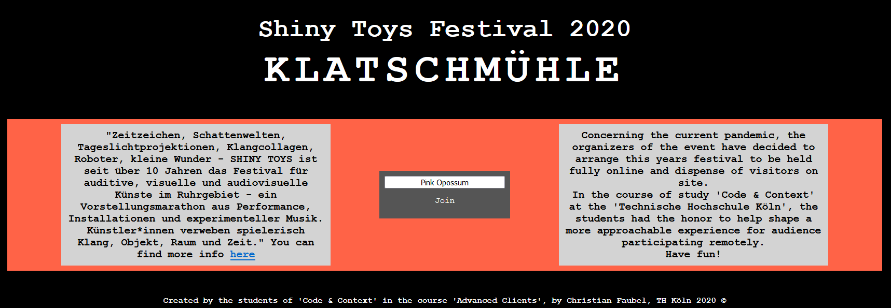

A short subtitle

Because of the pandemic, a festival of independent musicians called shiny toys turned to our study program to look for alternative ways of giving their artists a stage. What my group came up with was a digital, two-dimensional space, where users that would hit each other with their avatars make a clapping sound.
A big part of the process was the regular interaction with the festival hosts. In the end, the prototype actually got used, and at the festival itself, a fake moving hand was installed and connected to an LED to show the digital 'claps' to the musicians. The prototype is unfortunately not online anymore.